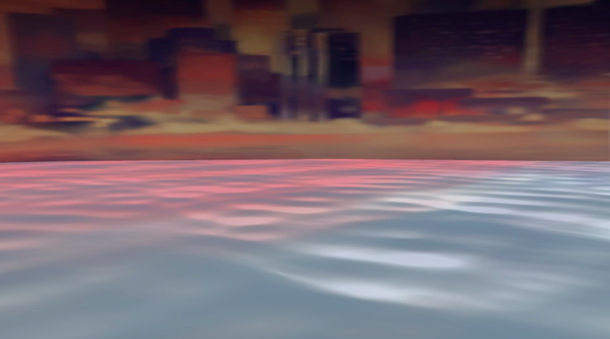
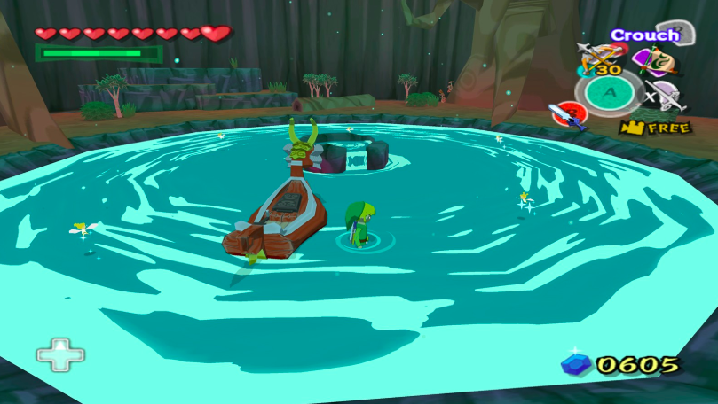
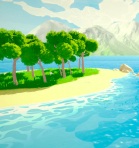

Our goal is to implement a stylized water shader such that it is easier to control colors, reflection, highlights of the water, and caustics. In the end, we want to create a shader that builds upon Maya’s Ocean Shader that gives artists the option to create water in a cel-shaded style and modify the shader such that it can simulate water-object interaction and potentially caustics.
Problem Description
The three of us are currently working on an animated short film, in which we are aiming for an overall cel-shaded style. We have been using GLSL shaders as the main implementation for the cel shaded look on characters, assets, and sets. There is a scene that involves an ocean, and as of now we do not have a good solution for a cel shaded look. Currently, we are using the Maya ocean shader, but it is hard to match colors and reflections of the scenery/matte painting. It is also difficult to stylize the water to look more 2D instead of a realistic simulation. While we want to preserve some of the effects the default shader provides, we want to build upon those effects for the style to better match the rest of the short.
Goals and Deliverables
We want our end product to be a shader that can applied to 3D objects in a program such as Maya, and this shader would have various attributes that can be changed or manipulated according to the artist’s visual style. Ocean Attributes will be a section that controls the “physics” of the water: wave speed, scale of the waves, and number of frequencies. Ideally, we will build on top of an OpenGL water shader to begin. To quantify how well our shader performs, we want to regularly compare our water’s style to the style of the characters, since they will be in the shot with the ocean directly behind them. We’ve included a render of the characters and our current ocean below. For us, a successful project is an ocean shader that looks cel-shaded, which also has attributes such as reflection and wave size that are able to be toggled. This shader will be applied to a flat plane to give the illusion of water that has height and depth. Ultimately, we want an end product that we can seamlessly integrate into our year-long animation project.
Our Current Water Scene and Characters
|

|

|
Currently, the water shader looks like the above images, in which the highlights do not contrast very strongly with the rest of the water. We want to aim for something more along the lines of the two images belowfrom the Wind Waker, in which the water is mostly defined by a few colors and have strong contrasts with each other. This means matching the water to follow the style of the characters which is defined by a base color, a bright highlight, and a darker shadow color.
Our End Goal Inspiration

|

|
|

|
If the project goes well, and we are ahead of schedule, we want to implement the effects of the water’s interaction with objects in the scene. We currently have boats and docks sitting in the water, but there is no indication of how the objects disrupt the water. Ideally, we will implement ripples around objects that intersect our water shader, with ripple ring width being adjustable; splashes/foam; and different wave heights around intersecting objects depending on the wave direction. Another thing